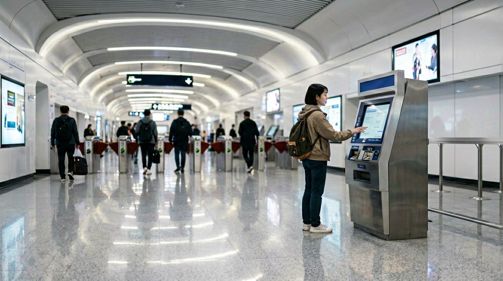
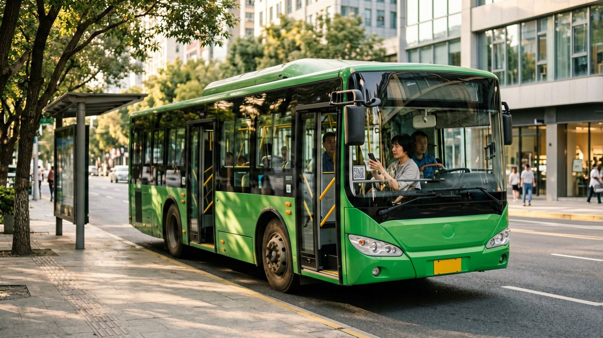
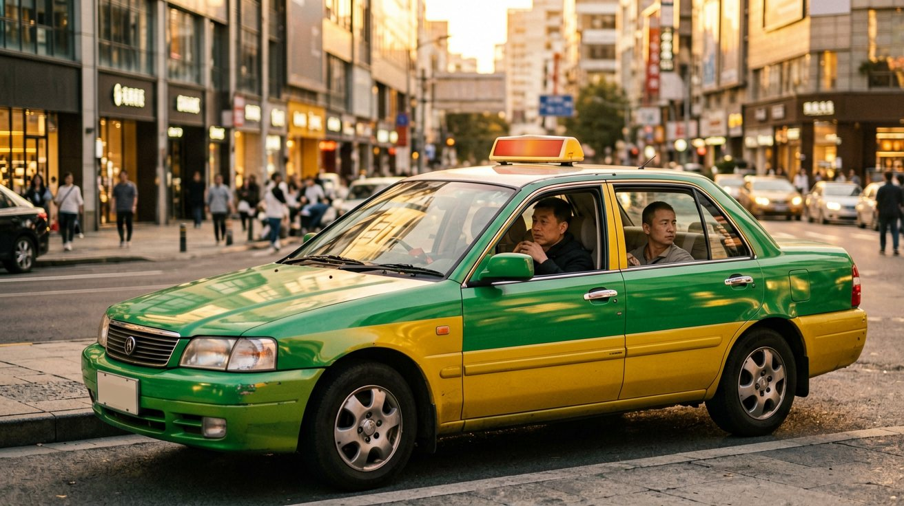

Last updated: June 2026.
You step out of your hotel in Beijing and need to get to the Forbidden City, three kilometres away. At home you would open Uber and be there in eight minutes. In a Chinese city you have five different ways to cover that distance — and two of them will cost less than fifty US cents. The real question is not cost. It is which options actually work when you do not have a Chinese ID card, a local bank account, or the ability to read Chinese. This guide answers that question for every mode of urban transport available to you.
By the time you finish reading, you will know how to pay for the metro, bus, taxi, and shared bike, how to navigate each system as a passport holder, and — just as importantly — which navigation apps will actually tell you where you are and how to get where you are going. Every method described here has been tested and works in 2026.
Metro and Subway — Your Main Transport Backbone

Every major Chinese city — and most mid-sized ones — has a subway system, and it is almost certainly the fastest way to cross the city. Trains run every two to six minutes from roughly 5:30 in the morning until 23:00 or midnight, with last-train times printed at every station. A single ride costs between 2 and 10 RMB depending on distance. Stations are air-conditioned, clean, and equipped with English signage and bilingual announcements in Beijing, Shanghai, Guangzhou, Shenzhen, Chengdu, and most other cities with international visitors. Metro maps are available in English at every station and inside every train car above the doors.
Getting through the fare gate is the step that stops most first-time visitors. You have four clear options.
The simplest method in 2026 is Alipay's Transport QR code. Open Alipay, tap "Transport" on the home screen, and a QR code appears. Hold it to the scanner on the gate — the gate opens instantly and the fare is deducted from your Alipay balance or linked foreign bank card. If you have already set up Alipay with your passport, this takes zero extra steps. WeChat Pay provides an identical Transport QR function. Both work on metro systems in every major city.
The second method, newly available across many cities since 2025, is tapping your international bank card directly at the gate. Metro systems in Beijing, Shanghai, Guangzhou, Shenzhen, Chengdu, Hangzhou, and a growing list of other cities now accept Visa and Mastercard contactless payments at fare gates. Look for the contactless payment symbol on the gate — if you see it, tap your card and walk through. No app, no QR code, no queue at a machine. This is the fastest option in cities where it is available.
The third method is the single-ride ticket machine. Every station has ticket vending machines with an English-language option. Tap the screen to switch languages, select your destination on the route map, and pay with cash — notes or coins — or, on newer machines, with your bank card. The machine dispenses a plastic token or single-use card. Touch it to the gate to enter, and insert it into the slot when you exit. This works in every metro station in the country but adds a couple of minutes to each trip.
The fourth method is a city transport card, sold and reloaded at station service counters. For a short stay this is usually more hassle than it is worth: you pay a deposit, queue at a counter, and tie up cash you may not fully use. If you are staying in one city for more than a week and riding the metro daily, it can save a few RMB per trip, but for most visitors Alipay's QR code is the path of least resistance.
Once through the gate, follow the signs to your platform. Lines are colour-coded and numbered. Overhead displays show the waiting time for the next train. Inside the car, electronic route maps above the doors flash the next station. Announcements play in Mandarin and English in most cities. Count stops against the map as you ride. When you arrive, check your map app for the correct exit — major stations have four to eight exits labelled A through H, and picking the wrong one can put you on the wrong side of a six-lane road with no crossing in sight.
City Buses — When to Use Them and How

A bus ride costs 1 to 3 RMB regardless of distance — a fixed fare on nearly all urban routes — making buses the cheapest motorised transport in China. The trade-off: using a bus without reading Chinese requires more preparation than using the metro.
Start with your map app. Enter your destination, switch to transit mode, and the app shows you which bus number to take, where to find the stop, and how many stops to ride. Memorise the bus number and count the stops as you go. Many buses display the next stop in Chinese and pinyin on an electronic screen at the front of the cabin, but this is not universal. Rely on your phone's live GPS dot on the map to know when to stand up and head for the rear door.
Boarding and payment follow a fixed pattern. In most cities you board through the front door and exit through the rear. Payment happens as you board — hold your Alipay or WeChat Transport QR code to the scanner next to the driver, wait for the beep, and find a seat. Some cities also accept international bank card taps on buses, but this is less common than on the metro, so assume you will need your phone. Bus stop signs and route information posted at stops are almost always in Chinese only, as are the scrolling text displays inside the bus.
Two timing notes. During rush hours — roughly 7:30 to 9:00 and 17:30 to 19:00 — buses can be packed to standing-room-only and stuck in the same traffic as every car on the road. Outside those windows, they are a relaxed, scenic, and genuinely pleasant way to travel across a Chinese city. Keep your phone charged: you need it for route guidance, payment, and knowing when to get off. If the battery dies mid-route, you are on your own.
Taxis and DiDi Ride-Hailing

DiDi is the dominant ride-hailing platform in China, and it is the simplest door-to-door option if you have already set it up. The full setup process — downloading the international version, registering with your passport, and linking a foreign credit card — is covered in our Essential Apps guide. Once installed, DiDi offers three service tiers: Express for a standard private car, Premier for a higher-grade vehicle at roughly twice the price, and Taxi to hail a regular street taxi through the app. The in-app chat translates your English messages into Chinese for the driver and their replies back to English, solving the language barrier almost entirely. Fares are comparable to ride-hailing in most Western cities for short trips, and cheaper for longer ones.
If you hail a taxi from the street — and in most Chinese cities, green or blue-and-yellow taxis are everywhere — the challenge is communication. Hardly any taxi drivers speak English. Before you step toward the curb, have your destination ready as Chinese text on your phone screen. Show it to the driver, confirm with a nod, and get in. The driver starts the meter. At your destination, the meter displays the fare in RMB. Cash is always accepted, and most taxis also accept Alipay or WeChat QR payments — the driver will point to a QR code sticker on the dashboard or the back of the front seat. Tipping is not expected.
A note on safety. Taxis in Chinese cities are regulated, metered, and overwhelmingly honest. At airports and train stations, walk to the official taxi queue outside the terminal. Ignore anyone approaching you indoors offering a "taxi" — these are unlicensed operators who charge several times the real fare. If a street taxi driver refuses to use the meter and names a flat price, wave the car on and hail the next one. Meter refusal is rare but it happens, and you are never obliged to negotiate.
Bike-Sharing — The Cheapest Way to Cover Short Distances
![[比例:16:9] Wide sidewalk scene in a Chinese city with rows of brightly coloured shared bikes — yellow Meituan, blue Hello, and green DiDi Qingju — parked neatly in a designated zone, a traveler in casual clothes scanning a QR code on a handlebar with a smartphone, modern glass office towers rising in the background on a clear sunny afternoon](images/local-transport-in-china-04-bike-sharing.jpg)
Chinese cities are built for bicycles. Dedicated bike lanes run alongside most major roads, separated from cars by a low barrier or a painted buffer. Flat terrain in most eastern and central cities makes cycling effortless. The three dominant platforms — Meituan (yellow), Hello Bike (blue), and DiDi Qingju (green) — operate tens of millions of bicycles across hundreds of cities. You will see them on nearly every block.
Unlocking a shared bike as a passport holder is easier than most people expect because you do not need a separate bike-sharing app. All three platforms are accessible as mini-programs inside Alipay or WeChat. Open Alipay, search for "Meituan Bike" or "Hello Bike," and the mini-program loads in seconds. Scan the QR code on the handlebar or rear fender, and the lock clicks open. Your first ride requires identity verification — the app asks you to upload a photo of your passport information page, and approval usually takes under a minute. Every subsequent ride is scan-and-go with no further verification.
Pricing is uniform across platforms. A single ride costs about 1.5 RMB for the first thirty minutes, with incremental charges beyond that. A seven-day unlimited pass costs roughly 5 to 10 RMB depending on the city and platform, covering rides up to thirty minutes each. If you plan to use shared bikes more than three or four times during your stay, the pass pays for itself by the second day.
Ending a ride requires one action that first-time users often miss: you must park inside a designated parking zone. The mini-program's map shows these zones as blue rectangles. Locking the bike outside a zone triggers a warning and may incur a small penalty — typically 2 to 5 RMB. Designated zones are dense in city centres. Lock the bike manually by pushing down the latch on the rear wheel, and the app confirms the ride has ended and displays the fare.
Electric shared bikes — recognisable by their thicker frames and a battery indicator on the handlebar — are also widely available. They cost slightly more, around 2 to 3 RMB per ride, and are capped at 25 km/h. The unlocking process is identical to a regular bike. Helmets are built into the front basket on newer models. Chinese traffic law requires helmet use on electric bikes, though enforcement for shared e-bike riders is inconsistent — use your judgement. Stay in the bike lane and expect the unexpected from electric scooters, which are silent, fast, and everywhere. Once you find your rhythm, cycling is one of the best ways to explore.
Navigation Apps and Practical Transit Tips
![[比例:16:9] Traveler standing on a busy city street corner in China holding a smartphone with a map app open at arm's length, Chinese street signs and a metro entrance visible in the background, the phone screen showing a clear blue route line and English street names, late-afternoon city light creating long shadows on the pavement](images/local-transport-in-china-05-navigation-apps.jpg)
Everything in this article — metro, bus, taxi, bike — depends on one thing working correctly: your navigation app. If your map does not show where you actually are, every other step breaks down. The good news is that two apps work reliably, and one of them is probably already on your phone.
Apple Maps is the best option for iPhone users. In China, Apple Maps pulls its data from Amap (高德地图), the country's most accurate mapping platform, but displays street names, transit stations, and points of interest in English. You can search for destinations by their English names and get reliable walking, transit, and driving directions. Metro line colours, bus numbers, and real-time transit updates all work correctly in major cities. If you have an iPhone, install nothing extra — Apple Maps just works. Download the offline map for your destination city over Wi-Fi before you leave your hotel.
Amap (高德地图) is the alternative for Android users and anyone who wants the most up-to-date transit data. Its interface is primarily in Chinese, and searching in English produces mixed results. The navigation display itself — the blue route line, the turn arrows, the remaining distance — does not require reading Chinese, which makes Amap usable even if you cannot understand the text. Recent versions include an English translation toggle in settings, though coverage is uneven. Baidu Maps is China's other major mapping platform. It has been adding English-language features, including an English interface mode accessible from the settings menu, but street-name coverage in English is less complete than Apple Maps. For most travellers, Apple Maps on iPhone and Amap on Android is the practical pairing.
Beyond navigation, a few practical tips will smooth your daily transit. In metro stations, the English announcements tell you the next station name and which side the doors will open — listen for them and count stops against the electronic route map above the doors. Keep a portable charger in your day bag: your phone is your ticket, your map, your translator, and your exit guide, and a dead battery mid-journey leaves you stranded. Screenshot your hotel address in Chinese characters and save it to your phone's photo album — you will need it for taxi drivers and for showing to passers-by if you get turned around. Metro stations and large shopping malls almost always have free public Wi-Fi, but it often requires a Chinese phone number to log in, so do not rely on it. Most importantly, give yourself ten extra minutes for any journey the first time you take it — Chinese cities are dense and unfamiliar. Once you have done a route, the second time feels easy.
This article is based on information as of June 2026.
Sources
- Beijing Municipal Commission of Transport — Beijing Subway Passenger Information: Foreign Visitor Access (2026)
- Alipay — Transport QR Code: International User Guide and Supported Cities (2026)
- DiDi — Rider App Features: International Version, Payment and Translation (2026)
- Amap (Gaode) — Navigation Platform: English Feature Availability (2026)
- Meituan Bike — Mini-Program Access via Alipay for Passport Holders (2026)
Policies, supported payment methods, and app features may change. Verify current options before your trip.